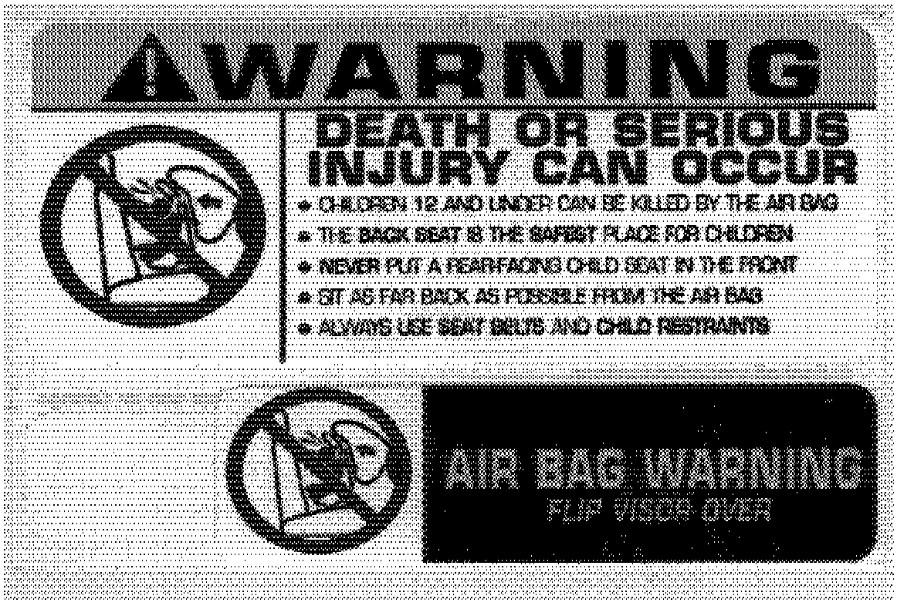
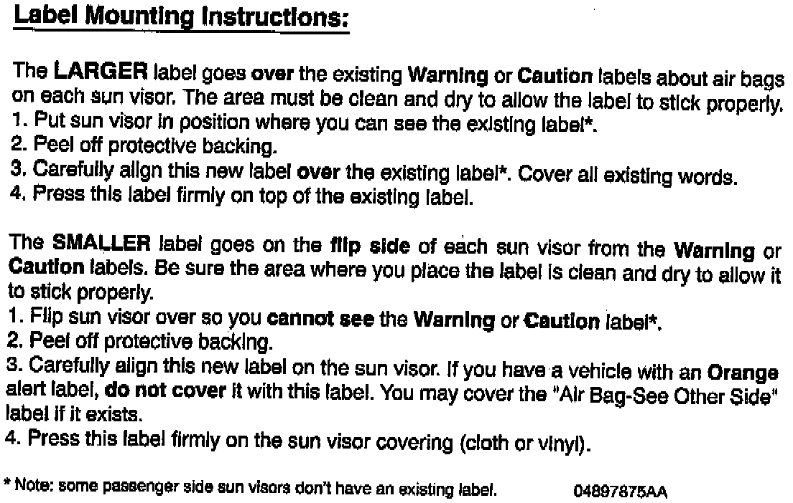

Service Procedure:


Four labels are required for every vehicle (two labels per sun visor). Each air bag warning label sheet contains one large label and one small label, as shown above. The following instructions for mounting the labels onto the sun visors also appear on the back of the label sheet. To ensure proper bonding of the labels, please warm up the interior of the vehicle to at least 50° Fahrenheit.
Completion Reporting and Reimbursement
Claims for vehicles which have been serviced must be submitted on the DIAL System. Use the following labor operation number and time allowance:
Labor Operation Time
Number Allowance
Install four (4) Air Bag Warning labels 23712182 0.2
Add the cost of the labels plus applicable dealer allowance to your claim.
Note:
See the Warranty Administration Manual, Recall Claim Processing Section for complete claim processing instructions.
Parts Return
Not applicable.
Following the above procedures will expedite the processing of your claim.
If you have any questions or need assistance in completing this action, please contact your Zone Service Office.